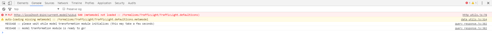
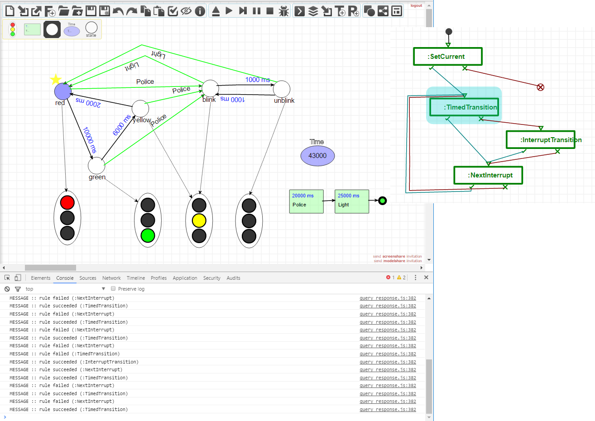

Executing a Model Transformation¶
The TransformationController toolbar is used to execute a model transformation.
The first button allows you to load a model transformation (schedule). The file browser will only allow you to load models that start with the T_ prefix.
Look in the console to see whether the transformation was correctly loaded:
From that point, you can use the four control buttons to start, step throug, pause and stop a transformation. The console will log which rules were tried and whether they succeeded or failed.
Warning
If you want to restart a transformation, please reload the current AToMPM instance or start a new one.
AToMPM supports the debugging of model transformation schedules. To enable debugging, press the last button of the TransformationController toolbar. When debugging is enabled, and you press play, a window will pop up containing the model of the schedule.
